Formfactor and Susceptibility¶
The simulation of reflectivities within PyXMRTool (based on Pythonreflectivity) relies on the energy-dependent susceptibities 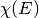 of the layers. It is in general a 3 x 3 tensor and is related to the complex refractive index  and the dielectric tensor
and the dielectric tensor  :
:
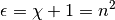
In some cases the susceptibility of one layer is calculated as a sum over the formfactors 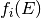 of atoms contained in this layer. In contrast to the susceptibility the formfactor is not an physical quantity and therefor different authors use different sign conventions. Within PyXMRTool the following conventions are used:
The formfactor with real and imaginary part:
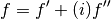
Relation to the absorption cross section:
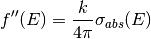
with the vacuum wave vector  of the incomming light. This means the imaginary part of the formfactor is always positiv. A resonance shows up as a “positiv peak”.
of the incomming light. This means the imaginary part of the formfactor is always positiv. A resonance shows up as a “positiv peak”.
The real part is the Kramers-Kronig transformation of the imaginary part:
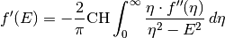
This means that  is typically negative within the x-ray range. Only close to resonances it might be positiv. There it behaves similar to the derivative of
is typically negative within the x-ray range. Only close to resonances it might be positiv. There it behaves similar to the derivative of  (concerning the slopes).
(concerning the slopes).
With the above given definitions the susceptibility is:
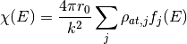
- with
- 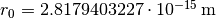 the classical electron radius
- 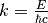 the vacuum wave vector of the incomming light
- 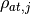 the number density of atom species j
- 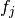 the formfactor (tensor) of atom species j
BEWARE: The Chantler-Tables (https://dx.doi.org/10.18434/T4HS32) use a different sign convention. As long as you use the automatic lookup the conversion is done automatically by PyXMRTool. But as soon as you read formfactors from files or create formfactors in some other user-controlled way, you have to stick to the above mentioned sign conventions.
This is how you have to transform them the formfactors from the Chantler tables to the ones used within PyXMRTool:
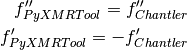